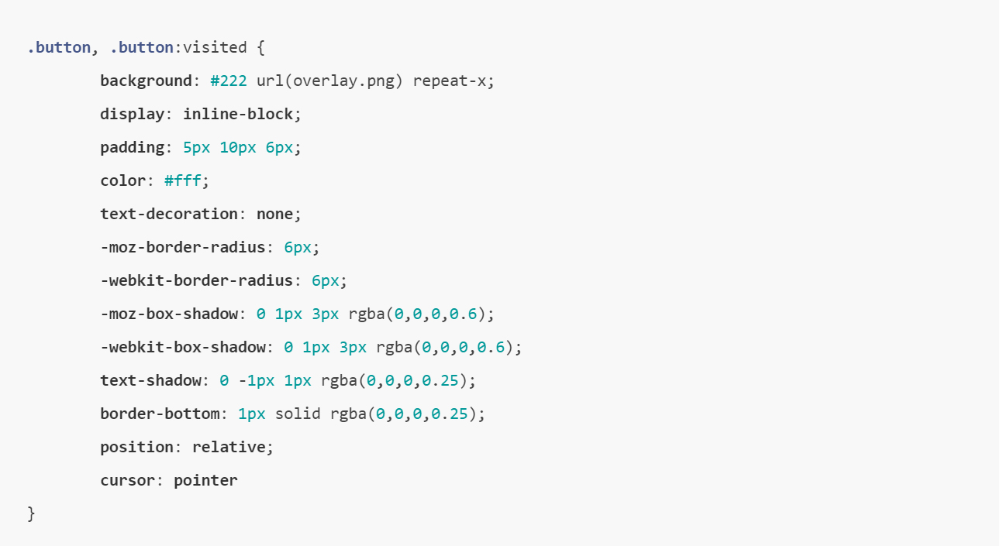
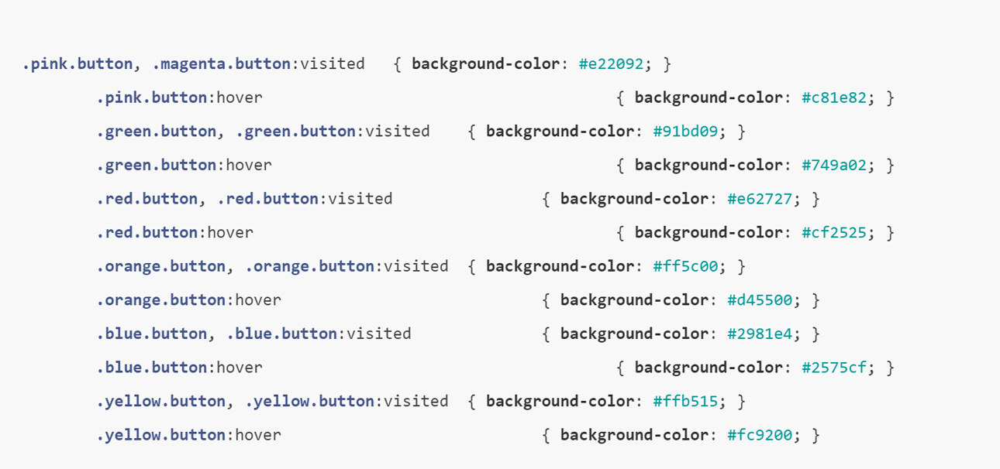

The button style
This is the default class that is applied to each button on our page. We can customise a button is by adding a chain of CSS classes, this way we can set the colour and size. You will see below that we have an overlay.png background image. This gives us the gradient effect if your still conscious about IE6 you will need to use a PNG transparency hack to make 24 bit PNG render correctly. Another feature with CSS3 is RGBA, This is the same as RGB but with an alpha layer allowing you to set the opacity of a colour. This allows us to easily change the background of our buttons containing div without us having to adjust the buttons style
http://papermashup.com/pretty-css3-buttons/
Button Colour
The final step is to specify a CSS class for whatever colour we want our button(s) to be. In this case we have a set of predefined colours but you can adjust or add to these as you like.
http://papermashup.com/pretty-css3-buttons/